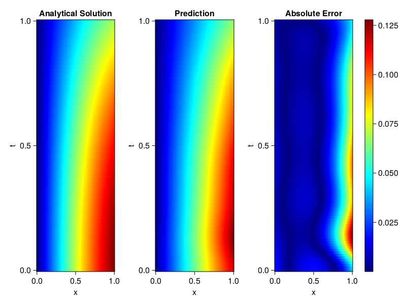
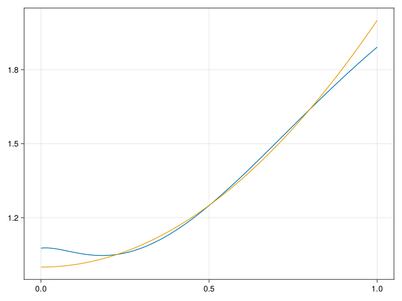

Inverse problem for the wave equation with unknown velocity field
We are going to sovle the wave equation.
using Sophon, ModelingToolkit, IntervalSets
using Optimization, OptimizationOptimJL
@parameters x, t
@variables u(..), c(..)
Dₜ = Differential(t)
Dₜ² = Differential(t)^2
Dₓ² = Differential(x)^2
s(x,t) = abs2(x) * sin(x) * cos(t)
eq = Dₜ²(u(x,t)) ~ c(x) * Dₓ²(u(x,t)) + s(x,t)
bcs = [u(x, 0) ~ sin(x),
Dₜ(u(x, 0)) ~ 0,
u(0, t) ~ 0,
u(1, t) ~ sin(1) * cos(t)]
domains = [t ∈ Interval(0.0, 1.0),
x ∈ Interval(0.0, 1.0)]
@named wave = PDESystem(eq, bcs, domains, [t,x], [u(x,t),c(x)])\[ \begin{align} \frac{\mathrm{d}}{\mathrm{d}t} \frac{\mathrm{d}}{\mathrm{d}t} u\left( x, t \right) =& c\left( x \right) \frac{\mathrm{d}}{\mathrm{d}x} \frac{\mathrm{d}}{\mathrm{d}x} u\left( x, t \right) + \cos\left( t \right) \left|x\right|^{2} \sin\left( x \right) \end{align} \]
Here the velocity field $c(x)$ is unknown, we will approximate it with a neural network.
pinn = PINN(u = FullyConnected((2,16,16,16,1), sin),
c = FullyConnected((1,16,16,1), tanh))
sampler = QuasiRandomSampler(500,100)
strategy = NonAdaptiveTraining(1, (10,10,1,1))NonAdaptiveTraining{Int64, NTuple{4, Int64}}(1, (10, 10, 1, 1))Next we generate some data of $u(x,t)$. Here we place two sensors at $x=0.1$ and $x=0.5$.
ū(x,t) = sin(x) * cos(t)
x_data = hcat(fill(0.1, 1, 50), fill(0.5, 1, 50))
t_data = repeat(range(0.0, 1.0, length = 50),2)'
input_data = [x_data; t_data]
u_data = ū.(x_data, t_data)1×100 Matrix{Float64}:
0.0998334 0.0998126 0.0997503 0.0996464 … 0.275281 0.267213 0.259035Finally we construct the inverse problem and solve it.
additional_loss(phi, θ) = sum(abs2, phi.u(input_data, θ.u) .- u_data)
prob = Sophon.discretize(wave, pinn, sampler, strategy; additional_loss=additional_loss)
@time res = Optimization.solve(prob, BFGS(), maxiters=1000)u: ComponentVector{Float64}(u = (layer_1 = (weight = [0.6936915524093549 0.972633281070586; 0.5916830463034941 1.3431866441067526; … ; -0.08770655078524385 0.012621827031498533; -0.5767659897841106 -0.9927188410618685], bias = [0.0356243337420758; -0.02326690257610416; … ; 0.011449031293375716; -0.09381553307657406;;]), layer_2 = (weight = [0.004745601280929315 -0.3694700329365969 … 0.18002186479748553 -0.35636716928180273; 0.09092286541916031 -0.03061421175997579 … 0.14765639095923264 -0.42274992293381625; … ; -0.48530141921156744 0.26173775760467693 … -0.10494086451209861 -0.3780698549094281; 0.4507117147102277 0.22751577967761386 … 0.3238351271737328 -0.40379373534248064], bias = [-0.061179486728423646; -0.014595238124232272; … ; -0.050335830219701415; -0.029928413040257732;;]), layer_3 = (weight = [0.19325435145914707 0.1631058231670091 … -0.44253413425501786 0.12018669574363605; 0.0904343459223564 0.3210303704974424 … 0.33387973616030353 0.38433773851146147; … ; 0.13933925708555672 -0.2957543677844196 … 0.5582932840732814 -0.0951594077448101; -0.4824836673807621 0.5386065871864677 … 0.14029489736978873 0.5228805285001078], bias = [0.09368918945611163; 0.05424014070221309; … ; 0.007393855206489059; 0.027651975367482963;;]), layer_4 = (weight = [-0.3599377383462348 0.7930538457702446 … -0.8084072530804819 0.028239901053535927], bias = [-0.05388690955216866;;])), c = (layer_1 = (weight = [-1.339077211309152; -2.1183030153374087; … ; -2.458173510250794; -2.2917403108177674;;], bias = [0.01934891020774485; -0.22176667867072591; … ; -0.08304026352871555; -0.21996207849675314;;]), layer_2 = (weight = [0.6178307556464435 0.6077987726371828 … -0.23307791074691148 0.5070080363193724; 0.17628726871830977 0.33165803815009187 … 0.678178480180711 0.13138403044880217; … ; -0.024724392622630546 -0.5340542982223064 … -0.3104479129136049 -0.21130206915147132; -0.009808152531692892 0.19172478059963513 … 0.45449706294337483 0.6312377028603047], bias = [-0.024323598500181853; -0.05889987989618641; … ; 0.02363798274787949; -0.02395297599502193;;]), layer_3 = (weight = [0.2915589477167096 -0.5057727876958927 … -0.4101266446314924 -0.0577716869938649], bias = [0.24547975069750064;;])))Let's visualize the predictted solution and inferred velocity
using CairoMakie
ts = range(0, 1; length=100)
xs = range(0, 1; length=100)
u_pred = [pinn.phi.u([x, t], res.u.u)[1] for x in xs, t in ts]
c_pred = [pinn.phi.c([x], res.u.c)[1] for x in xs]
u_true = [ū(x, t) for x in xs, t in ts]
c_true = 1 .+ abs2.(xs) |> vec
axis = (xlabel="x", ylabel="t", title="Analytical Solution")
fig, ax1, hm1 = heatmap(xs, ts, u_true, axis=axis; colormap=:jet)
ax2, hm2= heatmap(fig[1, end+1], xs, ts, u_pred, axis= merge(axis, (;title = "Prediction")); colormap=:jet)
ax3, hm3 = heatmap(fig[1, end+1], xs, ts, abs.(u_true .- u_pred), axis= merge(axis, (;title = "Absolute Error")); colormap=:jet)
Colorbar(fig[:, end+1], hm3)
fig
fig, ax = lines(xs, c_pred)
lines!(ax, xs, c_true)
fig